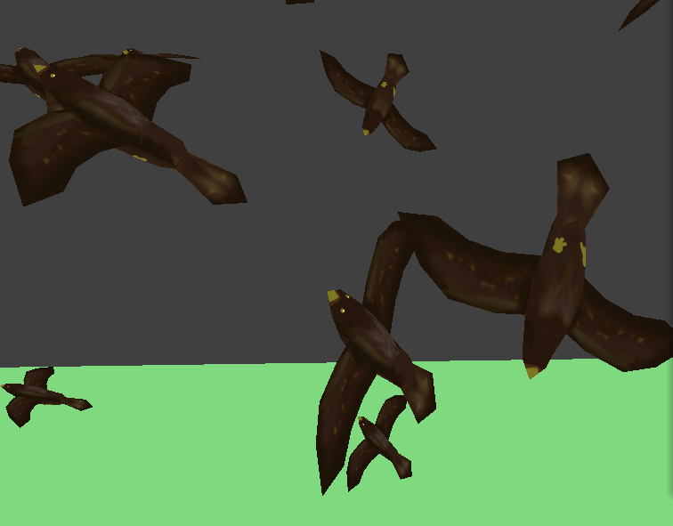

In this project, we try to improve the common existing 2D boid models by implementing it in 3D
with more delicate bird models and more verisimilar behaviors. All birds will move generally towards
a designated direction but with some variation according to forces on them. The forces include separation,
alignment and cohesion. There is also a stop mode that the birds will rest on a branch when it's close enough
to that branch and take off again after some time. We adapt the nanoGUI
from our last course project, and user can change the number of birds to simulate, the weight of
each of the force, the neighborhood size for determining the forces, as well as the designated
direction using the sliding bars on the GUI.
Overview video: https://youtu.be/nn_YtP_6YQI
Demo video: https://youtu.be/7BwFCAx3YVU
The nanoGUI we used in this project is adapted from last course project. Besides the commands P/N/R implemented already, we add command S for turning on/off the stop mode.
We represent every bird as a point mass, and there are three forces coherence, separation, and alignment between them. The implementation is based on boids algorithm. However, with this implementation, the speed of birds will go crazy when we increase the weights of the forces and then decrease it back to the original value. Therefore, we added a maximum speed for the birds to make sure the speed is always reasonable.
Then we add some interative features, so user can use sliding bars on GUI to change:

|
 |
To further picture the details of birds, we build a 3D build model using Blender. By aligning the
model axis with the velocity direction, we can make sure birds fly with their head facing the front.
We also manually painted a texture to add more details like feathers beak, and claws.
To include more realistic and interesting behaviors, we also added stop mode that the birds can stop at a random position on the nearest branch if it's close enough to the branch.

|
We start by adding ground and a single pole to the scene. Every time when the distance between a
bird and the pole is within a fixed value, the bird will fly towards a random position on the pole
calculated by implicit equation with deceleration until it rests on the pole. According to probability
theory, the birds should have even spacing between them. After some fixed time, birds will take off again
randomly with a probability according to Russian Roulette. After we see everything works well on the single
pole, we added more branches and make a tree via rotation and scale. The birds now will stop on the nearest branch.
To conclude, what we learned from lectures and put in this project includes:
Besides, it's always important to set restrictions according to physical conditions. For example, we know the bird speed must has an upper bound, and the speed change is continous and smooth, so there must be deceleration when birds try to stop on the branch.
Following are demonstrations of the three forces respectively.
|
coherence |
separation |
alignment |
There are two additional behaviors: interaction with the tree, and leading direction.
|
Birds will try to stop on the closest branch when it's close enough to the branch. |

The bird will take off again after resting for some time. |

Birds will fly to the coordinate set by user. |